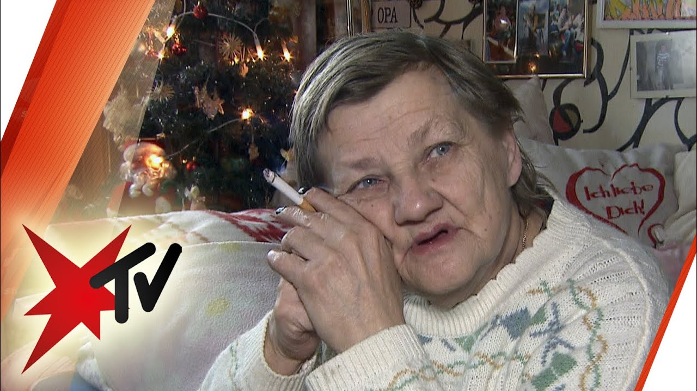

Serial turcesc Secrete în familie subtitrat | DespreSeriale
Sign in Join Acasa Stiri Seriale turcesti Filme turcesti Sign in Welcome! Log into your account your username your password Forgot your password? Create an account Sign up Welcome! Register for an account your email your username A password will be e-mailed to you. Password recovery Recover your password your email Sign in Welcome! Log into your account your username your password Forgot your password? Get help Create an account Create an account Welcome! Register for an account your email your username A password will be e-mailed to you. Password recovery Recover your password your email A password will be e-mailed to you. Despre Seriale Acasa Stiri Seriale turcesti Filme turcesti Home Lista seriale Secrete în familie
Secrete în familie
17 June, 2017Secrete în familie
Titlu original: Babam ve ailesi
Titlu romana: Secrete în familie
Gen: Drama
Episoade: 13
Produs de: Gold Production
Distribuitor: Kanal D
Primul episod: 19 septembrie 2016
Ultimul episod: 12 decembrie 2016
Roluri principale
Ayça Bingöl Nilgün Kayalar
Bülent İnal Kemal İpekçi
Ceyda Düvenci Suzan İpekçi
Sercan Badur Mert İpekçi
Lista episoade
Secrete in familie Episodul 41
8 October, 2017Secrete in familie Episodul 40
8 October, 2017Secrete in familie Episodul 39
8 October, 2017Secrete in familie Episodul 38
5 October, 2017Secrete in familie Episodul 37
5 October, 2017Secrete in familie Episodul 36
3 October, 2017Secrete in familie Episodul 35
2 October, 2017Secrete in familie Episodul 34
2 October, 2017Secrete in familie Episodul 33
30 September, 2017Secrete in familie Episodul 32
29 September, 2017Secrete in familie Episodul 31
28 September, 2017Secrete in familie Episodul 30
27 September, 2017Secrete in familie Episodul 29
27 September, 2017Secrete in familie Episodul 28
25 September, 2017Secrete in familie Episodul 27
24 September, 2017Secrete in familie Episodul 26
23 September, 2017Secrete in familie Episodul 25
22 September, 2017Secrete in familie Episodul 24
21 September, 2017Secrete in familie Episodul 23
20 September, 2017Secrete in familie Episodul 22
19 September, 2017Secrete in familie Episodul 21
18 September, 2017Secrete in familie Episodul 20
17 September, 2017Secrete in familie Episodul 19
16 September, 2017Secrete in familie Episodul 18
15 September, 2017Secrete in familie Episodul 17
14 September, 2017Secrete in familie Episodul 16
13 September, 2017Secrete in familie Episodul 15
12 September, 2017Secrete in familie Episodul 14
10 September, 2017Secrete in familie Episodul 13
10 September, 2017Secrete in familie Episodul 12
9 September, 2017 Load more TAGS Secrete în familie Secrete în familie subtitrat Facebook Twitter Pinterest WhatsApp Previous article Calikusu Episodul 17 Next article Patria mea esti tu DSRELATED ARTICLES MORE FROM AUTHOR
Avarie
Iubiri neterminate
Bate la usa mea
Inima schimbătoare
Fiica Ambasadorului
Alegerea
La bine si la greu
Domnul Gresit
O noua viata
Maria si Mustafa
© 2017-2020 www.DespreSeriale.online